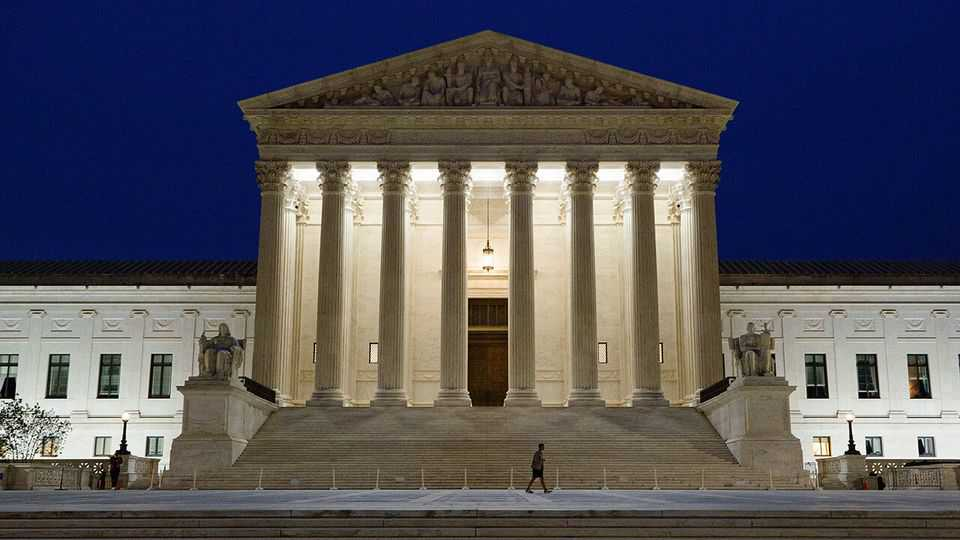

The coming fight over free speech
The Supreme Court must decide whether to limit the First Amendment or executive power

Oct 1st 2026
On the first day of Donald Trump’s second term, he promised “to immediately stop all government censorship and bring back free speech to America”. Twenty months on, federal judges have ruled against the president in more than 70 cases regarding the First Amendment, which guarantees freedom of religion, speech and the press; lower courts have issued judgments on everything from campus protests to the president’s pressure on law firms. Other than a few emergency orders, however, the Supreme Court has yet to weigh in. As the court begins its term on October 5th, that is due to change.
The justices face a surfeit of divisive issues, including whether Arizona can require proof of citizenship from voters, whether a city can sue energy companies over climate change and whether the Second Amendment precludes bans on AR-15-style weapons. But cases on the First Amendment will loom particularly large in this term. Press freedom looks fairly secure. The harder questions arise when the right to free expression runs up against claims of presidential power.
The new term follows a period in which the Supreme Court has been largely friendly to Mr Trump’s pleas, giving him satisfaction in more than two-thirds of 40 emergency applications. However, justices have shown willingness to cross him, too, notably in cases over the deployment of the National Guard, his sweeping tariffs, and his attempts to eliminate birthright citizenship and sack a Federal Reserve governor. In September the court rebuffed another executive order, which would have let the president commandeer mail-in voting ahead of November’s midterm elections. Mr Trump fumed that the justices he had appointed were “merely a shell of their original selves”.
Yet those defeats share a characteristic that may not bode well for plaintiffs challenging Mr Trump’s policies on free expression. Other than Trump v Barbara, the case on birthright citizenship, each of the prominent cases in which the court ruled against the president turned on whether his actions clearly violated congressional statutes. On questions involving the separation of powers, the court has consistently given the presidency broad leeway, either out of fear of provoking a constitutional crisis or a belief that the constitution grants wide authority to the executive branch, in what is called the “unitary executive” theory.
At the same time, Genevieve Lakier, a law professor at the University of Chicago, notes that under John Roberts, the chief justice, the court has also zealously defended rights granted by the First Amendment across presidential administrations. These two imperatives—to assert executive authority and to uphold the First Amendment—are now at odds.
The constitution’s protection of the free press is so explicit that the Supreme Court is likely to disappoint the president in two cases involving the media. The first concerns Mr Trump’s attempt, as a private litigant, to revive a $475m defamation suit against CNN, a news network, for characterising his claims that he won the 2020 election as a “Big Lie”. Formidable obstacles to defamation suits mean that the president’s case will probably fail, either because the Supreme Court refuses to take it or because it rules against him.
The second case involves Mr Trump’s recent attempt to revoke White House credentials for journalists at CNN and two other news organisations, MS NOW and Politico, complaining of “Fake News” and claiming their reporting endangered national security. On September 24th Timothy Kelly, a federal judge appointed by Mr Trump, placed the move on hold for a fortnight. The national-security justification was weak, Judge Kelly wrote, and did not seem to be the president’s “actual motivation”. Mr Trump has said that he would pursue an appeal “almost without question”, assuming Judge Kelly converts a temporary restraining order into a preliminary injunction. If so, the Supreme Court is likely to side with Judge Kelly. Heidi Kitrosser, a law professor at Northwestern University, points out that the government may not exclude select members of the press merely because the president is unhappy with their stories. The national-security claims, she adds, “do not pass the laugh test”.
On other questions of the First Amendment and presidential authority, however, the court’s conservative supermajority may be more open to Mr Trump’s position. Last year the administration cancelled grants to researchers in California from the Environmental Protection Agency, National Science Foundation and other agencies. Federal dollars for projects that promote “diversity, equity, and inclusion”, the government concluded, are “no longer in the public interest and should be terminated”.
Two courts deemed this to be discrimination based on researchers’ views, in violation of the First Amendment, spurring an appeal to the Supreme Court. Having twice split over grant cancellations on its emergency docket, the court may use Trump v Thakur to take up the issue. Ms Lakier points out this would reopen a messy precedent from the 1990s that gave the government some leeway—but not free rein—in deciding which projects to fund. Today’s more conservative court, Ms Lakier reckons, might embrace the position that the conservative Justice Antonin Scalia adopted at the time: when the government opens its purse, it can attach whatever strings it likes.
Another clash likely late in the court’s term is the case of Mahmoud Khalil, a pro-Palestinian activist and green-card holder who was nabbed by federal immigration officers in the lobby of his home near Columbia University last year. Mr Khalil, who faces deportation, says he was targeted for his views. In May the Third Circuit Court of Appeals voted 6-5 not to reconsider an earlier ruling against Mr Khalil; a petition to the Supreme Court is on its way. With lower courts divided, Steve Vladeck of Georgetown University predicts that the justices may require people in Mr Khalil’s position to press their arguments before immigration judges first, rather than in federal district court. Immigration judges, Mr Vladeck says, are “increasingly un-independent” and reflect the agenda of the executive branch. Mr Trump styles himself a champion of free speech. This term may reveal how far the Supreme Court is willing to go to assert that standard.■
Stay on top of American politics with The US in brief, our daily newsletter with fast analysis of the most important political news, and Checks and Balance, a weekly note that examines the state of American democracy and the issues that matter to voters.